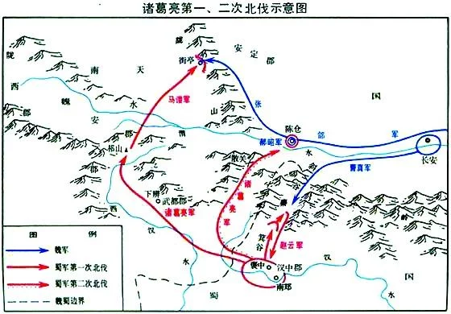

第九十五回：馬謖拒諫失街亭
武侯彈琴退仲達
「滾滾長江東逝水，浪花淘盡英雄...」
街亭已失，蜀漢危在旦夕。司馬懿十五萬鐵騎即將兵臨城下，夫子請帶領弟子親臨西城敵樓。
【請點擊下方「下一頁」開啟西城戰局】
諸葛亮（181年－234年）
📍 字號：字孔明，號臥龍。
📍 籍貫：東漢末年徐州琅琊陽都（今山東省臨沂市沂南縣）人。
📍 職位：三國蜀漢（季漢）丞相，傑出的政治家、軍事家。
📍 生平：躬耕隴畝，受劉備三顧茅廬而出山，聯吳抗曹、三分天下，輔佐昭烈帝劉備及後主劉禪，為蜀漢社稷鞠躬盡瘁，死而後已。
「諸葛亮之為相國也，撫百姓，示儀軌，約官職，從權制，開誠心，布公道；盡忠益時者雖仇必賞，犯法怠慢者雖親必罰，服罪輸情者雖重必釋，遊辭巧飾者雖輕必戮；善無微而不賞，惡無纖而不貶；庶事精煉，物理其本，循名責實，虛偽不齒；終於邦域之內， 咸畏而愛之，刑政雖峻而無怨者，以其用心平而勸戒明也。可謂識治之良才，管、蕭之亞匹矣。然連年動眾，未能成功，蓋應變將略，非其所長歟！」
思辨
❓ 思考問題：陳壽給予諸葛亮極高的政治評價（「管、蕭之亞匹」），但同時指出「非其所長」的是什麼？這與他隨後在「街亭之戰」的用人與軍事決策是否有關？
建興五年：撰《出師表》北伐
「今南方已定，兵甲已足，當獎率三軍，北定中原，庶竭駑鈍，攘除奸凶，興復漢室，還於舊都...」諸葛亮平定南方後，隨即上書後主，立誓北伐魏國，以完成先帝遺願。
戰略要衝：涼州與關中
蜀漢軍隊從漢中出發，北面是巍峨的秦嶺。秦嶺道路險阻，難以運糧。為了取得優勢，諸葛亮選擇了避開正面雄關，而以「聲東擊西」之計，突襲魏國防守薄弱的隴右地區。
形勢
💡 戰略分析：秦嶺五道險阻，蜀軍運糧極為艱難。諸葛亮首度北伐避開魏軍重兵把守的關中正面，轉攻隴右，是一步以小博大的精妙奇棋！

第一次北伐與街亭對峙示意圖
街亭：決定北伐成敗的咽喉
⚔️ 隴右響震：蜀軍兵出祁山，天水、南安、安定三郡紛紛開城投降，魏明帝曹叡親自坐鎮長安，朝野震恐。
⚔️ 命運的樞紐：魏國派出大將張郃率領精銳鐵騎前來奪回隴右。蜀軍必須守住街亭這個交通樞紐，阻擋張郃前進，才能確保北伐主力穩固隴右三郡。
⚔️ 用人決策：諸葛亮力排眾議，委派參軍馬謖為主帥、王平為副將前往鎮守街亭。
關鍵
💡 街亭若守住，則隴右可安，蜀漢便擁有了豐富的戰馬與糧草基地；若街亭失守，魏國援軍主力將直撲祁山，北伐大軍將面臨腹背受敵、被包抄切斷的滅頂之災！
「亮身率諸軍攻祁山，戎陳整齊，賞罰肅而號令明，南安、天水、安定三郡叛魏應亮，關中響震。魏明帝西鎮長安，命張郃拒亮，亮使馬謖督諸軍在前，與郃戰於街亭。」
「謖違亮節度，舉動失宜，大為郃所破。亮拔西縣千餘家，還於漢中，戮謖以謝眾。」
歷史實相 vs 文學張力
🔹 違亮節度：馬謖沒有按照諸葛亮的部署當道安營，而是執意上山紮營。
🔹 大為所破：張郃斷水圍山，馬謖慘敗，導致北伐滿盤皆輸，諸葛亮只得被迫撤軍。
🔹 空城計的由來：歷史上，諸葛亮因街亭失守而拔西縣千餘家，退回漢中。而《三國演義》為了塑造孔明神機妙算的形象，在街亭失守後，巧妙安插了西城「大擺空城計」的精采情節！
對照
❓ 思考：課文《空城計》是《三國演義》中的「文學創作」，而非正史《三國志》所載。當我們理解了這層歷史背景，是否更能體會作者透過「空城計」來反襯孔明「處變不驚、臨危不亂」的文學美學？
說書人合扇嘆曰：「空城計之危，實起於馬謖大意。」
孔明派馬謖駐守蜀軍咽喉重地街亭。孔明臨行前再三叮嚀：『必須當道下寨，扎緊營防。』不料馬謖剛愎自用，自恃讀過兵書，不聽副將王平極力勸阻，執意捨棄大路，將大軍安營於水源斷絕的孤山上。魏國名將張郃見狀，火速派兵包圍孤山、斷絕水道。蜀軍不戰自亂，街亭失守！
思辨
❓ 課堂追問：歷史上，這是蜀漢「第一次北伐」，也是距離「興復漢室」最近、最可能成功的一次，卻因馬謖這一失誤導致全局崩盤。如果你是諸葛亮，此刻看著魏軍逼近，你內心除了緊張，還有什麼樣的痛苦與無奈？
說書人拍案：「街亭既失，大門洞開，因果循環，下回目隨即揭曉...」
文本尋寶
請翻開課本《空城計》第一頁，找到原回目。請點選孔明以琴退兵的「原回目下半句之詞語」。
🎬 【作者怎麼寫】「製造懸念與因果伏筆」
上半句「馬謖拒諫失街亭」寫「失」，下半句「武侯彈琴退仲達」寫「退」。作者將「失」與「退」並列，暗示了街亭之失直接逼出了西城空城計。這就是評書小說中最經典的因果勾連，牢牢抓住了讀者。
❓ 課堂追問：如果馬謖當初聽了副將王平的規勸「當道下寨」，這場西城的驚險大戲還會發生嗎？
說書人拍撫醒木：「城外十五萬魏軍旌旗蔽日，鐵騎激起漫天沙塵！而西城之中，守軍寥寥無幾。」
文本尋寶
請翻開第一段。點選原文中蜀軍此時在城中「只剩下多少兵力」的真實數字。
🎬 【作者怎麼寫】「極端數字對比以渲染氛圍」
作者一開篇就以「十五萬大軍」對比「二千五百軍」。這種 60:1 的實力懸殊，瞬間在讀者心中營造出極致壓抑、窒息的危機感。將主角逼上退無可退的絕境，以反襯後文的高超智慧。
❓ 課堂追問：在這種極端兵力對比下，如果你是西城守軍，此時聽到魏軍來了，你最想做的事是什麼？
你按在琴弦上的手指微微發抖，城外十五萬鐵騎激起的沙塵已經撲面而來。此生死一瞬，你該如何？
文本尋寶
翻閱課文第五段。孔明解釋不跑的理由，原話為：「若棄城而走，必不能____，得不為司馬懿所擒乎？」請點選正確的缺漏詞。
🎬 【作者怎麼寫】「鋪陳唯一的理性抉擇」
作者在後文讓孔明親自剖析「棄城逃跑」的下場。這段話證明了諸葛亮的空城計不是盲目的冒險，而是經過嚴密邏輯計算後的「唯一活路」。作者用精準的推理把「冒險」寫成了「必然」。
❓ 課堂追問：如果你被眼前的恐懼遮蔽，會做出什麼錯誤決定？
❌ 【結局：半路被俘】
你帶著老弱殘兵慌忙向後撤退。然而平原之上毫無掩體，司馬懿的精銳鐵騎半個時辰內便追上大軍，你與眾官伺候皆被俘。
「若棄城而走，必不能遠遁，得不為司馬懿所擒乎？」
諸葛亮的判斷完全正確。逃跑，是自投羅網。
❌ 【結局：城破兵敗】
你選擇了關門死守。魏軍見西城城門緊閉、如臨大敵，司馬懿料定你兵力空虛且無防備，直接下令全力猛攻。不到半個時辰，城門被破，守軍盡皆身死。
在實力懸殊時，閉門死守無異於自我暴露虛弱。
說書人曰：「大難臨頭，西城裡的氣氛凝結到了冰點...」
心境對照
請點選下方卡片，對照「眾官的慌亂」與「孔明的冷靜」，體會正反襯托與對比的寫作手法！
🎬 【作者怎麼寫】「反襯對比的大將之風」
羅貫中在此處寫眾官「無不失色」，是典型的反襯與對比手法。透過眾官的慌亂無措、六神無主，強烈反襯諸葛亮臨危不亂的沉著。更精妙的是，這種「定」不是憑空而來，而是諸葛亮在瞬間對敵我心理進行了冷靜分析，主動做出大開城門、百姓灑掃的極致部署。
❓ 課堂追問：眾官之慌與孔明之定，這種強烈的「反襯對比」，在塑造孔明的大將之風上起到了什麼藝術效果？
心戰沙盤
點擊諸葛亮的部署，切換至司馬懿視角，感受他看到反常舉措時的心理防線變化！
孔明禦敵部署：
⚔️ 他人作為（部下軍士）
🧙♂️ 自己作為（孔明親自）
司馬懿觀測視角
請點擊左側部署進行觀測
魏兵十五萬已壓境，正等待司馬懿下達進攻命令...
🎬 【作者怎麼寫】「虛實相生 ➡️ 讓對手在腦中自己建構敵軍」
這就是《孫子兵法》「實則虛之，虛則實之」的極致寫法！諸葛亮手裡沒有實兵（只有1.6%），但他知道司馬懿為人謹慎。因此他用這五個「極度反常」的安排，主動露出破綻。當反常累積到100%時，司馬懿的理性防線便會徹底崩潰，在腦中幻想出「城內必有驚天埋伏」。作者寫這場戰役，精妙在於**諸葛亮打的不是物理戰，而是司馬懿大腦裡的認知戰**。
ROLE SWAP ── 司馬懿
你現在是：魏國名將 ── 司馬懿
你引十五萬大軍，本想一舉剿滅蜀漢大本營，卻見城門大開，諸葛亮在上面空手撫琴、笑臉相迎...
你勒住戰馬韁繩，遙望城頭。這畫面太精緻，你拉近了特寫鏡頭...
文本尋寶
請在下方課文原文中，用手指點選標記出「司馬懿眼裡看到，最打擊他心防的兩個神態特寫詞語」。
孔明坐於城樓之上，笑容可掬，焚香操琴。左有一童子，手捧寶劍；右有一童子，手執麈尾。城門內外有二十餘百姓，低頭灑掃，旁若無人。
🎬 【作者怎麼寫】「視角轉換與精妙的字眼增減」
第二段寫孔明下令時，為全知命令，無神態。第三段當視角切換到「司馬懿眼睛」時，作者精妙地添上了「笑容可掬」與「旁若無人」八個字。作者利用對手警惕多疑的視角放大這些神態，將心理博弈寫出了動態電影般的推拉感。
❓ 課堂追問：為什麼百姓低頭灑掃必須是「旁若無人」？如果是「驚慌失措的灑掃」會有什麼差別？
鏡頭語言
點選下方角色，切換【鏡頭A：動作命令（全知觀點）】與【鏡頭B：神態特寫（司馬懿主觀觀點）】，觀察作者如何用文字當相機！
鏡頭 A：全知遠景（寫「動作」）
請點擊上方按鈕
客觀描寫，交代局勢。
鏡頭 B：神態特寫（寫「神態」）
請點擊上方按鈕
神態拉近，直擊心理。
❓ 課堂追問：為什麼作者在此要重複描寫（城頭操琴與百姓灑掃），但又刻意加上這兩個詞（「笑容可掬」與「旁若無人」）？
💡 【教學解析引導】動作與神態的對比襯托
1. 從「動作」到「神態」：第二段僅是客觀交代防線部署（寫動作命令）；第三段當司馬懿引兵前來時，重複描寫畫面卻刻意加上這兩個神態詞，是為了將鏡頭拉近，直擊人物內心。
2. 製造極致的「對比」：在十五萬大軍大兵壓境的窒息肅殺中，城頭「笑容可掬」與城門「旁若無人」的極度從容，與龐大危機形成鮮明對比，製造出極致的心理懸念。
3. 精妙的「正反襯托」：
• 反襯：以部下眾官「無不失色」的慌亂，反襯主帥孔明憑欄操琴的鎮定。
• 正襯：以百姓「旁若無人」的清掃，正襯主帥孔明「勝券在握」的氣定神閒，藉此徹底擊碎司馬懿的理性防線。
城門大開，琴音悠遠。你手握十五萬大軍，此時此刻，你該下達什麼命令？
文本尋寶
翻閱第三段。司馬懿喝退司馬昭，認為孔明絕不會弄險的原話：「亮平生____，不曾弄險...」請點選缺漏字。
🎬 【作者怎麼寫】「虛實相生，利用敵人的認知來作戰」
作者在第四段寫到司馬懿對司馬昭的反駁。司馬懿說孔明「一生謹慎」。作者在此處展現了最高明的寫作技巧：諸葛亮退兵並非靠刀槍，而是利用了司馬懿大腦裡自己為諸葛亮打上的標籤。以偏見為武器，以虛化實。
❓ 課堂追問：生活中你有沒有類似「因為想太多反而做出錯誤判斷」的經驗？
魏軍撤退時，司馬昭質疑：「莫非無兵，故作此態？父親何故便退兵？」
司馬懿嚴厲反駁：「亮平生謹慎，不曾弄險。今大開城門，必有埋伏...宜速退。」
寫作思維
💡 思考追問：小說至此，魏軍直接退兵便可。為什麼羅貫中要刻意安插「司馬昭質疑父親」這段父子爭辯的插曲？
❌ 【結局：兔死狗烹，滿門抄斬】
你下令攻城，發現城內果然空虛，輕易擒殺了諸葛亮。消息傳回大魏朝廷，朝臣見蜀漢威脅已除，魏帝氣量狹小，在三個月後以功高震主奪你兵權並將你滿門抄斬。
「狡兔死，走狗烹；飛鳥盡，良弓藏。」
這便是著名的「養寇自重」政治智慧：留下諸葛亮，司馬懿在魏國才安全。
❌ 【結局：痛失良機，反遭夾擊】
你選擇在城外按兵不動。你包圍了兩個時辰，此時臨退之前忽然山谷中漫天鼓聲大震，蜀國伏兵關興、張苞的部隊殺出。魏軍以為真的中了伏兵，丟盔棄甲而去。
魏國大軍如潮水般退去。我們來回顧司馬懿心防被擊碎的心理轉折...
文本尋寶
請翻閱第二、三、四段。點選出司馬懿對此局的三個心理神態轉折原文。
💡 【教學解析引導】由淺入深的心理神態層遞
作者在此處僅用了三個簡短的詞彙，就極其精準地寫出了司馬懿心理防線被攻破的三個層次：
1. 聽報時「笑而不信」：極寫司馬懿的自信與對諸葛亮的輕視，為後續的心態轉折埋下伏筆。
2. 目睹時「看畢大疑」：親眼看到琴童、百姓的怪異舉措，內心深處的謹慎轉化為猜忌，自己大腦建構出了「驚天伏兵」的幻想。
3. 做出決定「便急退兵」：理智防線徹底崩塌後的本能反應。
作者完全沒有寫半句心理獨白，僅僅使用三個神態的層遞法，就把司馬懿從自負、懷疑到驚恐退兵的思維盲區寫得層次分明、引人入勝。
❓ 課堂追問：在司馬懿大疑退兵前，作者特別安排了次子「司馬昭」說出實情（「莫非諸葛亮無兵，故作此態？」），卻被司馬懿斥退。請討論：作者在此加入司馬昭這個插曲，在寫作與刻畫人物上有何深意？
魏兵退去，西城上下一片歡呼。眾官無不駭然，圍著孔明詢問這驚天計謀的祕密...
心智拼圖
請點選下方卡片，對照並解碼「諸葛亮的心理預判」與「司馬懿的思維盲區」！
🎬 【作者怎麼寫】「戰後邏輯剖析，收束全書懸念」
作者在此安排孔明與眾官問答，藉由「料吾生平謹慎，必不弄險」點出：諸葛亮打的不是物理戰，而是司馬懿心中的偏見。孔明將司馬懿對他「謹慎」的標籤轉化為退敵武器，展現了「知己知彼」的最高境界。這場心智對決，讓讀者心服口服。
❓ 課堂追問：如果前來的不是謹慎多疑的司馬懿，而是莽撞有勇無謀的張飛，空城計還能成功嗎？這對你理解「知彼」有何啟發？
說書人拍案：「孔明不僅算準了司馬懿退兵，連他退走的路線，也早已瞭如指掌！」
軍事沙盤
請翻閱課文第五段。在下方水墨地圖中，點選孔明料定魏兵撤退必定會走的路線以設下伏兵！
🗺️ 蜀軍撤退軍事沙盤
請在左側點選行軍路線進行伏擊部署
🎬 【作者怎麼寫】「情節重巒疊嶂，預判對手的預判」
作者在讀者以為「危機已過」時，突然拋出「山北小路設伏兵」的精彩伏筆。諸葛亮不僅料定司馬懿會退，連他退走的路線（小路安全心理）都算得一清二楚。這種雙重預判，使故事在結尾處再次掀起高潮，讓讀者對主角的智慧佩服得五體投地。
❓ 課堂追問：多看一步、預判對手的逃跑路線，這展現了什麼深謀遠慮的思維特質？
空城一役，傳頌千古。民間將諸葛亮的智慧與膽識編成了許多妙趣橫生的歇後語。
水墨謎題
請在下方古風謎面上，猜出空城計的歇後語謎底，解鎖最終智謀復盤！
🎬 【作者怎麼寫】「定格經典，提煉文學價值」
作者通過一連串的矛盾衝突、懸念與心理刻畫，將這段虛構的小說情節寫成了歷史的經典。這句歇後語「化險為夷」，正是這套精心設計的情節帶給大眾最深遠的智慧結晶。
❓ 課堂追問：生活中有開已失的絕地，而你最後是如何靠冷靜與智慧化險為夷的？
智謀總結 ── 掌握人性
《孫子兵法》云：「知己知彼，百戰不殆。」
🎬 【作者怎麼寫】「將戰事昇華為人性的博弈」
羅貫中寫這篇課文，其核心不在於兵力的碰撞，而是在描摹人性的鏡子。諸葛亮的空城計能大獲全勝，非因武力，而是因為他精準地算計了司馬懿「多疑」且「對自己一生謹慎標籤的深信不疑」。這是一場心戰，也是作者筆下對人性的終極解構。
⚔️ 西城突圍成功 ⚔️
夫子與弟子已成功穿透文本，完成空城計所有智謀與寫作手法的復盤。
「羽扇綸巾談笑間，檣櫓灰飛煙滅。」